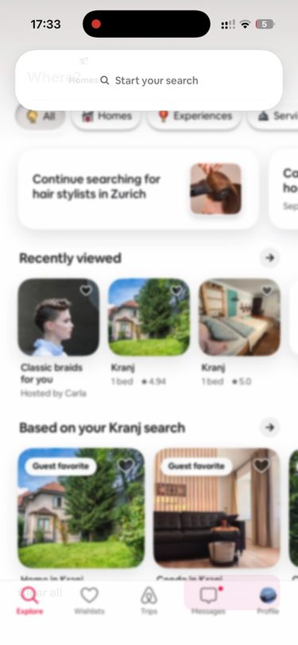
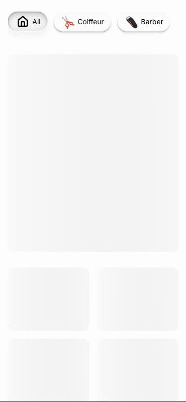

Both start at the tap. Same size, same speed, same clock. Drag the slider to step through it frame by frame.


Captured at 60 frames per second, so one step of the slider is about 17 milliseconds. Point at the step where it goes wrong.